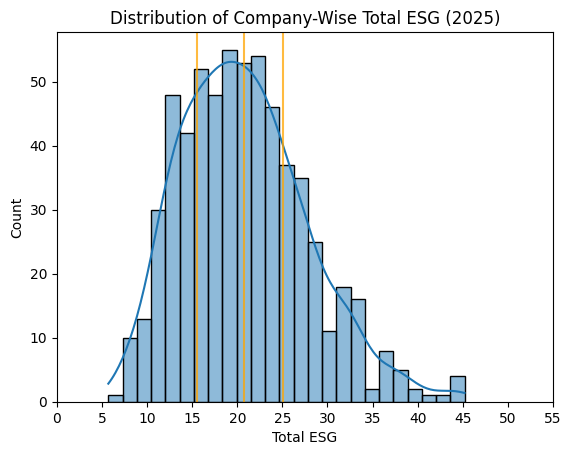

DANL 210 - Unifying ESG Metrics with Financial Analysis
Author
Hayden Mikula
Published
May 15, 2025
In 2016, Morningstar released the first iteration of the Environmental, Social, and Governance (ESG) scores using data collected by Sustainalytic’s ESG research efforts, with the intention to make insider information surrounding companies and investment risk much more accessible to the public. Today these ratings are largely standardized, being featured alongside company’s financial information on prominent market data websites such as Yahoo Finance.
For these websites, the ESG ratings are indicators of an institution’s risk relating to various sustainability metrics and general level of public controversy, and serve as general influences to consumer investment. In a survey conducted by Morningstar in September of 2024, 67% of asset owners believe that the ESG rating scheme has become more integral to their investment decisions.
With these ratings being presented alongside company-wise financial data such as historical stock price and income statements, the question arises: Just how effective is the ESG rating in predicting public investment decisions / outlooks?
Exploratory Questions:
How concerned are companies with reducing their ESG risk?
Which industries typically have the highest ESG risk assessments?
Do ESG ratings affect stock prices?
Library & File Setup
import pandas as pdimport seaborn as snsimport matplotlib.pyplot as pltimport randomfrom google.colab import drivedrive.mount('/content/drive')
Drive already mounted at /content/drive; to attempt to forcibly remount, call drive.mount("/content/drive", force_remount=True).
The individual Total ESG, Environmental, Social, Governance, and Controversy ratings for 625 companies in 2024, along with the stock price financial data for these 625 companies from January 1st, 2024 - March 31st, 2025
The individual Total ESG, Environmental, Social, Governance, and Controversy ratings for 3135 companies in 2025
All data was scraped from each company’s Historical Data and Sustainability sections on Yahoo Finance respectively
ESG Data
esg_2024
Year
Symbol
Name
Sector
Industry
Country
Market_Cap
IPO_Year
total_esg
Environmental
Social
Governance
Controversy
0
2024
A
Agilent Technologies Inc. Common Stock
Industrials
Biotechnology: Laboratory Analytical Instruments
United States
40365434818
1999.0
13.6
1.1
6.4
6.1
2.0
1
2024
AA
Alcoa Corporation Common Stock
Industrials
Aluminum
United States
6622135551
2016.0
24.0
13.8
5.9
4.3
3.0
2
2024
AAL
American Airlines Group Inc. Common Stock
Consumer Discretionary
Air Freight/Delivery Services
United States
9088024606
NaN
26.4
9.9
11.6
4.8
2.0
3
2024
AAP
Advance Auto Parts Inc.
Consumer Discretionary
Auto & Home Supply Stores
United States
4474665296
NaN
11.5
0.1
8.3
3.1
2.0
4
2024
AAPL
Apple Inc. Common Stock
Technology
Computer Manufacturing
United States
2614310000000
1980.0
17.2
0.5
7.4
9.4
3.0
...
...
...
...
...
...
...
...
...
...
...
...
...
...
620
2024
XYL
Xylem Inc. Common Stock New
Industrials
Fluid Controls
United States
32010402681
2011.0
18.1
4.3
8.7
5.2
1.0
621
2024
YUM
Yum! Brands Inc.
Consumer Discretionary
Restaurants
United States
39885044416
NaN
20.1
4.5
11.4
4.1
2.0
622
2024
Z
Zillow Group Inc. Class C Capital Stock
Consumer Discretionary
Business Services
United States
10195469129
NaN
22.2
1.2
11.5
9.5
2.0
623
2024
ZBH
Zimmer Biomet Holdings Inc. Common Stock
Health Care
Industrial Specialties
United States
24476778026
NaN
26.0
3.6
14.5
7.9
2.0
624
2024
ZTS
Zoetis Inc. Class A Common Stock
Health Care
Biotechnology: Pharmaceutical Preparations
United States
72535308358
2013.0
18.8
3.2
6.8
8.7
2.0
625 rows × 13 columns
esg_2025
Year
Symbol
Name
Sector
Industry
Country
Market_Cap
IPO_Year
total_esg
Environmental
Social
Governance
Controversy
0
2025
A
Agilent Technologies Inc. Common Stock
Industrials
Biotechnology: Laboratory Analytical Instruments
United States
3.391867e+10
1999.0
10.1
1.1
5.0
3.9
1.0
1
2025
AA
Alcoa Corporation Common Stock
Industrials
Aluminum
United States
8.279121e+09
2016.0
25.1
14.7
8.0
2.4
3.0
2
2025
AAL
American Airlines Group Inc. Common Stock
Consumer Discretionary
Air Freight/Delivery Services
United States
7.325392e+09
NaN
23.8
9.6
11.3
2.9
2.0
3
2025
AAMI
Acadian Asset Management Inc. Common Stock
Finance
Investment Managers
United Kingdom
9.987823e+08
2014.0
31.3
NaN
NaN
NaN
NaN
4
2025
AAON
AAON Inc. Common Stock
Industrials
Industrial Machinery/Components
United States
6.547366e+09
NaN
21.5
NaN
NaN
NaN
NaN
...
...
...
...
...
...
...
...
...
...
...
...
...
...
3130
2025
ZUMZ
Zumiez Inc. Common Stock
Consumer Discretionary
Clothing/Shoe/Accessory Stores
United States
2.929444e+08
2005.0
15.1
NaN
NaN
NaN
1.0
3131
2025
ZVIA
Zevia PBC Class A Common Stock
Consumer Staples
Beverages (Production/Distribution)
United States
1.565735e+08
2021.0
32.9
NaN
NaN
NaN
NaN
3132
2025
ZVRA
Zevra Therapeutics Inc. Common Stock
Health Care
Biotechnology: Pharmaceutical Preparations
United States
4.307623e+08
NaN
34.6
NaN
NaN
NaN
NaN
3133
2025
ZWS
Zurn Elkay Water Solutions Corporation Common ...
Industrials
Industrial Machinery/Components
United States
5.741099e+09
2012.0
14.3
8.3
2.8
3.3
NaN
3134
2025
ZYME
Zymeworks Inc. Common Stock
Health Care
Biotechnology: Pharmaceutical Preparations
United States
8.704068e+08
NaN
29.0
NaN
NaN
NaN
NaN
3135 rows × 13 columns
Stock Data
stocks
Symbol
Name
Date
Open
High
Low
Close
Adj. Close
Volume
Dividend
0
A
Agilent Technologies Inc. Common Stock
2025-03-28
119.21
119.66
116.36
116.69
116.44
1772900.0
NaN
1
A
Agilent Technologies Inc. Common Stock
2025-03-27
120.00
120.33
118.73
118.97
118.72
2075700.0
NaN
2
A
Agilent Technologies Inc. Common Stock
2025-03-26
120.72
121.14
119.05
119.90
119.65
2652900.0
NaN
3
A
Agilent Technologies Inc. Common Stock
2025-03-25
122.60
123.04
119.76
120.51
120.25
1605900.0
NaN
4
A
Agilent Technologies Inc. Common Stock
2025-03-24
121.88
124.43
120.89
121.97
121.71
1557400.0
NaN
...
...
...
...
...
...
...
...
...
...
...
194370
ZTS
Zoetis Inc. Class A Common Stock
2024-01-08
194.53
196.28
192.67
196.15
192.99
1610600.0
NaN
194371
ZTS
Zoetis Inc. Class A Common Stock
2024-01-05
193.07
195.94
193.07
194.85
191.71
1088200.0
NaN
194372
ZTS
Zoetis Inc. Class A Common Stock
2024-01-04
192.85
194.93
192.01
194.04
190.91
1851900.0
NaN
194373
ZTS
Zoetis Inc. Class A Common Stock
2024-01-03
195.92
195.95
192.80
192.93
189.82
1493000.0
NaN
194374
ZTS
Zoetis Inc. Class A Common Stock
2024-01-02
195.79
197.95
195.05
196.57
193.40
1642300.0
NaN
194375 rows × 10 columns
Data Exploration
How concerned are companies with reducing their ESG risk?
To begin, let’s compare the distribution of Total ESG ratings from the common companies between the two available ESG-related data frames, along with being split by Year:
( sns.histplot(data=esg_2024, x ='total_esg', kde =True, bins =25) .set(xlabel="Total ESG", ylabel="Count", title="Distribution of Company-Wise Total ESG (2024)"))for l in [esg_2024['total_esg'].quantile(0.25), esg_2024['total_esg'].mean() , esg_2024['total_esg'].quantile(0.75)]: plt.axvline(x = l, alpha =0.75, color ='orange')plt.xticks(ticks=[0,5,10,15,20,25,30,35,40,45,50,55])plt.show()
( sns.histplot(data=esg_common_2025, x ='total_esg', kde =True, bins =25) .set(xlabel="Total ESG", ylabel="Count", title="Distribution of Company-Wise Total ESG (2025)"))for l in [esg_common_2025['total_esg'].quantile(0.25), esg_common_2025['total_esg'].mean() , esg_common_2025['total_esg'].quantile(0.75)]: plt.axvline(x = l, alpha =0.75, color ='orange')plt.xticks(ticks=[0,5,10,15,20,25,30,35,40,45,50,55])plt.show()

sns.histplot(data = esg_2024[~esg_2024['total_esg'].isna()], x ='total_esg', kde=True, label ='2024', bins =25),sns.histplot(data = esg_common_2025[~esg_common_2025['total_esg'].isna()], x ='total_esg', kde=True, label ='2025', bins =25)plt.title("Distribution of Company-Wise Total ESG")plt.xlabel("Total ESG Rating")plt.ylabel("Count")plt.xticks(ticks=[0,5,10,15,20,25,30,35,40,45,50,55])plt.legend()plt.show()
From this, it can be observed that there hasn’t been a total ESG shift in favor of a higher/lower average. However, from 2024 to 2025 the distribution of ESG ratings has normalized slightly, dispersing the higher concentration of values surrounding the mean in 2024 more towards the ends of the distribution that reflects movement towards a lower risk overall, though it isn’t significant.
To get a better idea of what caused this dispersion, let’s look at the distributions of the individual parts that make up the Total ESG rating:
sns.histplot(data = esg_2024[~esg_2024['Environmental'].isna()], x ='Environmental', kde=True, label ='2024', bins =30),sns.histplot(data = esg_common_2025[~esg_common_2025['Environmental'].isna()], x ='Environmental', kde=True, label ='2025', bins =30)plt.title("Environmental Risk Distribution 2024-2025")plt.xlabel("'Environmental' Score")plt.ylabel("Count")plt.legend()plt.show()
sns.histplot(data = esg_2024[~esg_2024['Social'].isna()], x ='Social', kde=True, label ='2024', bins =30),sns.histplot(data = esg_common_2025[~esg_common_2025['Social'].isna()], x ='Social', kde=True, label ='2025', bins =30)plt.title("Social Risk Distribution 2024-2025")plt.xlabel("'Social' Score")plt.ylabel("Count")plt.legend()plt.show()
sns.histplot(data = esg_2024[~esg_2024['Governance'].isna()], x ='Governance', kde=True, label ='2024', bins =30),sns.histplot(data = esg_common_2025[~esg_common_2025['Governance'].isna()], x ='Governance', kde=True, label ='2025', bins =30)plt.title("Governance Risk Distribution 2024-2025")plt.xlabel("'Governance' Score")plt.ylabel("Count")plt.legend()plt.show()
Governance is the most adjusted attribute, with there being a real shift in the distribution itself by ~1.25 points in favor of a lower risk, rather than the values being merely redistributed. This tells us that companies have generally been making efforts to refine/redefine their structures, public transparency, and/or stockholder rights.
This is likely due to the 2024 amendment to the ESG by Morningstar to incorporate issues relating to material usage (such as water or raw materials) as a contributor to a lacking corporate governance structure, urging companies to find ways to limit material waste in addition to its existing effect in reducing Environmental risk as well.
Looking at the Environmental distribution, though, we see that this combined effect isn’t received in the same way, with the amount of companies within the low/medium ranks increasing rather than the average decreasing in the same way as Governance did.
One explanation for this could be that there was a reallocation of weights for waste management between the two ratings when the 2024 update occurred, causing the Environmental rating to increase while not being a drastic change as a result of waste management already being a factor, albeit possibly weighted less heavily. For Governance, the waste management parameter was a new addition, so the change would have ended up being more fundamental.
Which Sectors / Industries Typically have the Highest ESG Ratings?
# which industries typically have the highest ESG ratings?mean_esg_2025 = ( esg_2025 .groupby(['Sector', 'Industry']) .agg(esg_mean = ('total_esg', 'mean'), esg_std = ('total_esg', 'std')) .dropna() .reset_index())mean_esg_2025.sort_values('esg_mean', ascending=False)
Sector
Industry
esg_mean
esg_std
65
Energy
Coal Mining
51.025000
8.421698
115
Industrials
Farming/Seeds/Milling
40.575000
6.584515
1
Basic Materials
Metal Mining
39.956250
9.653046
68
Energy
Integrated oil Companies
39.407143
7.042996
70
Energy
Oil & Gas Production
39.156250
11.617241
...
...
...
...
...
12
Consumer Discretionary
Books
13.550000
2.050610
36
Consumer Discretionary
Motor Vehicles
13.425000
2.227667
38
Consumer Discretionary
Newspapers/Magazines
12.600000
2.501999
46
Consumer Discretionary
Publishing
12.100000
4.667333
39
Consumer Discretionary
Office Equipment/Supplies/Services
8.775000
3.031364
166 rows × 4 columns
# Relationship between mean esg and mean esg std deviation; higher mean = higher variancesns.lmplot(data = mean_esg_2025, x ='esg_mean', y ='esg_std')plt.title("Industry Avg. ESG & Std Deviation 2025")plt.xlabel("Average Total ESG")plt.ylabel("ESG Standard Deviation")plt.show()
The prevailing observation here is that there is a strong positive correlation between average ESG and standard deviation. This implies that as ESG ratings become larger, the range between ratings becomes wider in turn, additionally showing that higher ratings among industry peers are less likely to stick as the norm.
More industries/companies are coming to the consensus that a lower ESG score is in their best interests, but is this a financial interest or a public relations interest?
Do ESG Scores Affect Stock Price?
To attempt to answer this question, a possible method could be to plot the relationship between a company’s change in ESG rating and its average stock price. However, this could cause outliers during visualization, beacuse some stocks are valued much higher than others. Instead, I decided to compare the difference in ESG to the average % change of the Adjusted Closing price of a company’s stock, that way the change is more normalized.
Taking a small random sample from the companies with significant differences in ESG scores, we can start to narrow down the nature of this relationship.
def rand_sample(n, start, end, seed): random.seed(seed)return random.sample(range(start, end), n)# Examplerand_sample(15, 100, 300, 10)# A sample of 15 numbers from 100-300, with a set seed of '10'
esg_diff_pos['avg_adj_change'] = ( stocks[stocks['Symbol'].isin(esg_diff_pos['Symbol'])] .groupby('Symbol')['adj_pct_change'] .agg('mean') .reset_index(drop=True))sns.lmplot(data = esg_diff_pos, x ='Difference', y ='avg_adj_change')
esg_diff_neg['avg_adj_change'] = ( stocks[stocks['Symbol'].isin(esg_diff_pos['Symbol'])] .groupby('Symbol')['adj_pct_change'] .agg('mean') .reset_index(drop=True))sns.lmplot(data = esg_diff_neg, x ='Difference', y ='avg_adj_change')
It appears that there is a trend with there being a large degree of uncertainty for both visualization’s best fit line, which is indicative of there not being a clear relationship between changes in ESG rating and changes in adjusted closing stock price. The two plots reflect two completely different relationships, one where an increase in ESG correlates to negative changes to stock price, and one where an increase in ESG correlates to a more positive change.
Even with a combination of these data points, the lack of a definitive relationship is clear, indicated by the near horizontal regression line:
esg_diff_comb = pd.concat([esg_diff_pos, esg_diff_neg]).reset_index(drop=True)esg_diff_comb['avg_adj_change'] = ( stocks[stocks['Symbol'].isin(esg_diff_comb['Symbol'])] .groupby('Symbol')['adj_pct_change'] .agg('mean') .reset_index(drop=True))sns.lmplot(data = esg_diff_comb, x ='Difference', y ='avg_adj_change')
print("Despite this,", esg_diff.query("Difference < 0")['Difference'].shape[0] / esg_diff['Difference'].shape[0] *100, "percent of ESG ratings have lowered between 2024 and 2025.")
Despite this, 63.2 percent of ESG ratings have lowered between 2024 and 2025.
Conclusion
In conclusion, although ESG score metrics impact the public outlook of a company, and are not uncommonly considered during consumer investment decisions, they doesn’t seem to retain much usefulness when it comes to a company’s financial gain/loss from stocks.
A company’s incentive to decrease their ESG rating likely comes from either the desire to be looked upon favorably in comparison to their peers or from the pressures of having a standardized metric of sustainability that they could possibly be held accountable for. Regardless of the lack of a clear relationship, companies are vying for lower ESG ratings as time goes on, improving their corporate structures and endeavoring to make environmentally sustainable decisions, the importance of which cannot be understated.